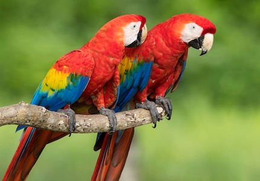
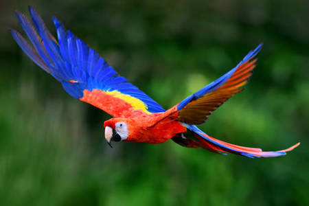

Wow you're just like Me! Based on your answers you share similarities with the Scarlet Macaw (Ara macao), The Best Bird Species in the World!

The Scarlet Macaw (AKA the best bird out there) is a beautiful, intelligent and social species of bird. Our diet consists mainly of nuts, seeds, leaves and sometimes insects (all of them are super delicious). Scarlet Macaws are very smart birds with an abundance of energy and character and can be very affectionate. We make great companions and if we're raised as a lone pet, we adopt you as our flockmate and form a strong bond. We also travel in pairs, groups of 3-4 and sometimes large flocks of up to 30 of us! Like me, you are an intelligent, loyal, affectionate, social butterfly (not an actual butterfly because you're a human) who is just all around awesome!
Click on Ceasar to Restart!